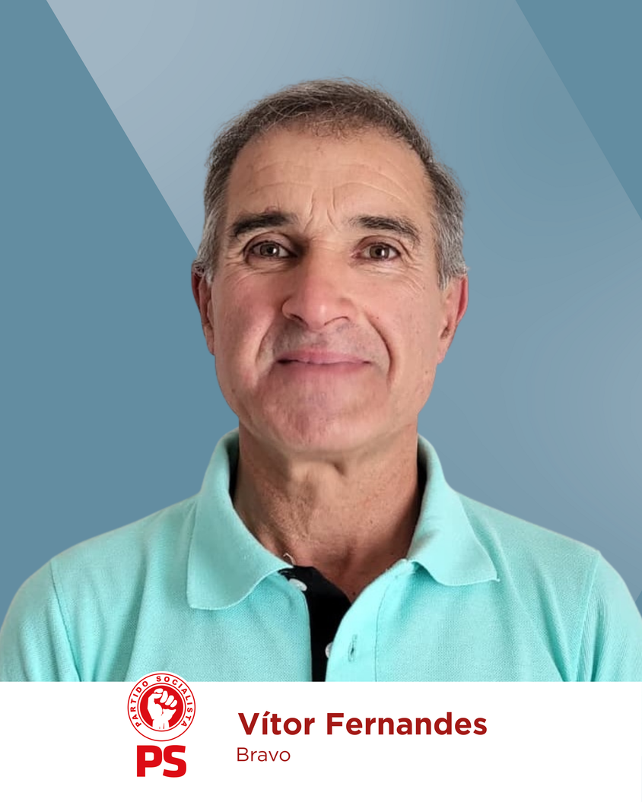

JUNTA DE FREGUESIA DE PEDRÓGÃO PEQUENO
O meu nome é Francisco Rei, tenho 47 anos e nasci em Pedrógão Pequeno.
Pedrógão Pequeno é a minha origem, o meu presente e o meu futuro. Foi aqui que nasci, cresci e onde decidi fixar-me definitivamente. É nesta terra que estão as minhas raízes, a minha família e os valores que sempre me guiaram ao longo da vida.
A minha vida profissional levou-me a viver fora durante largos anos, como aconteceu com tantos conterrâneos. Mas nunca estive afastado: mantive sempre uma ligação próxima, atento aos problemas e aos anseios da nossa freguesia, acompanhando de perto a sua vivência.
Ao longo dos anos, assumi responsabilidades que muito me honram: sou Presidente da Mesa da Assembleia Geral da Sociedade Filarmónica Aurora Pedroguense há mais de 20 anos; Presidente da Assembleia de Freguesia nos últimos 12 anos; Deputado Municipal nos dois últimos mandatos; integrei os Corpos Sociais do Rancho Folclórico de Pedrógão Pequeno e da Associação de Desenvolvimento de N.ª Sr.ª da Confiança. Sempre tive como compromisso maior a defesa das causas e dos interesses de Pedrógão Pequeno e, sobretudo, das suas gentes - em especial dos que aqui vivem.
Hoje estou de regresso para aqui continuar a minha atividade profissional e dar mais de mim à nossa terra. Talvez por isso me tenha sido lançado, insistentemente, o nobre e responsável desafio de me candidatar a Presidente da Junta de Freguesia de Pedrógão Pequeno.
A minha formação académica e experiência na área das engenharias deram-me capacidade de planeamento, de rigor e de trabalho em equipa, qualidades fundamentais para enfrentar os desafios que se colocam ao interior do País e, inevitavelmente, a Pedrógão Pequeno.
Este é o momento de olharmos em frente com confiança. Juntos, podemos construir esse futuro.
Juntos, vamos potenciar Pedrógão Pequeno!
JUNTOS, temos Força para Avançar!

Programa
DESENVOLVIMENTO E EMPREGO
- Valorização das Albufeiras do Cabril e da Bouçã.
- Pavilhão Multiusos no Largo de São Sebastião.
- Espaço para Cowork e Incubadora de negócios.
- Espaços para fixação de pequenas empresas.
INFRAESTRUTURAS E MOBILIDADE
- Requalificação da EN2 com passeios e estacionamento.
- Melhorias em toda a rede viária da Freguesia.
- Conclusão do Cemitério.
- Iluminação LED em toda a Freguesia.
- Requalificação da calçada, rede de drenagem de águas pluviais, redes de energia e comunicações, na Rua Eduardo Conceição e Silva.
- Limpeza, Manutenção e Conservação de Estradas e Caminhos Florestais.
- Regulamento de Trânsito e Estacionamento, no Monte de Nossa Senhora da Confiança, Bairro do Cabril e Vila.
PATRIMÓNIO E IDENTIDADE
- Divulgação e Valorização do Património Cultural e Turístico.
- Requalificação da Capela da Misericórdia, atual Casa Mortuária.
- Requalificação da Igreja Matriz.
- Requalificação e Valorização do Monte N.ª Sr.ª da Confiança.
- Requalificação e Valorização do Moinho das Freiras.
- Miradouro na Serra do Bravo.
- Apoio e Promoção das Tradições e Romarias.
- Colocação de placas de toponímia na Vila.
AMBIENTE E SUSTENTABILIDADE
- Saneamento básico no Bravo, Póvoa da Alegria e Vale da Galega.
- Gestão e Valorização dos Baldios.
- Rede de pontos de água para combate a incêndios.
- Carregadores para carros elétricos.
- Valorização da zona da Pedreira.
PROXIMIDADE E COMUNIDADE
- Reabilitação da sede da Junta de Freguesia.
- Serviços modernizados e informatizados.
- Atividades para idosos e combate ao isolamento.
- Apoio a todas as coletividades e associações.
- Reabilitação do recinto desportivo e sua envolvente, do Bairro do Cabril.